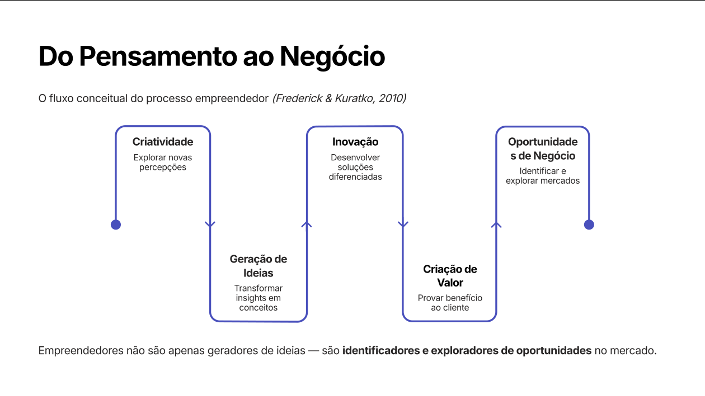
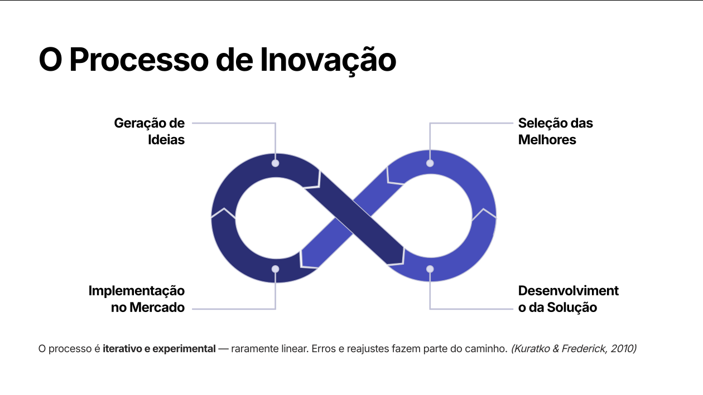
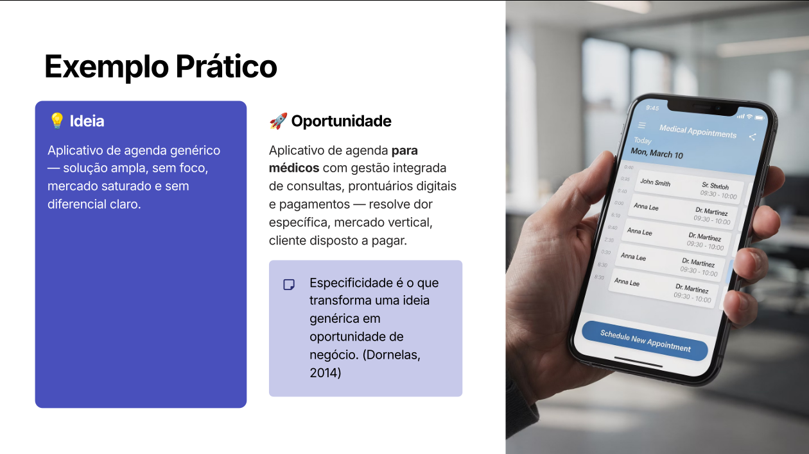

Novos negócios raramente começam com capital. Começam com ideias e percepções. Criatividade é a matéria-prima do empreendedor.

Base do processo de criação de novos negócios (Dornelas, 2015; Kuratko et al., 2016).
Criatividade — capacidade de gerar ideias novas, úteis ou inesperadas pela combinação de conhecimentos existentes. Inovação — transformação de ideias em soluções que criam valor. Oportunidade empreendedora — situação em que uma inovação pode ser explorada econômica ou socialmente.
O que envolve criatividade empreendedora?
Percepção de problemas — identificar necessidades não resolvidas.
Conexão de conhecimentos — integrar áreas distintas.
Imaginação de soluções — gerar respostas inovadoras.
Combinação de tecnologias — integrar saberes em domínios diferentes.
Criatividade é uma competência desenvolvível, não um dom inato. Empreendedores criativos transformam insatisfação com o status quo em inovação.
Barreiras à criatividade
Barreira
Efeito
Medo do erro
Punir fracasso inibe experimentação
Burocracia excessiva
Normas rígidas sufocam o pensamento divergente
Pressão por respostas imediatas
Urgência elimina espaço para reflexão criativa
Pensamento excessivamente lógico
Racionalidade sem intuição limita novas conexões
Cultura conservadora
Organizações que valorizam só o previsível
Fatores que estimulam a criatividade
Diversidade de experiências
Interação entre pessoas — trocas catalisam ideias
Curiosidade intelectual — questionar como motor
Experimentação e tolerância ao erro
Capítulo 2
Inovação — tipos e processo
Nem toda ideia criativa vira inovação. O diferencial está na execução e na geração de valor.
Inovação é a introdução de novos produtos, processos, serviços ou modelos de negócio capazes de gerar valor econômico ou social. É o motor do desenvolvimento econômico (Schumpeter).
Tipos de inovação (Schumpeter / Manual de Oslo)
Tipo
Definição
Exemplo
Produto
Novo bem ou serviço com características inéditas
iPhone
Processo
Nova forma de produzir ou entregar
Linha de montagem Ford
Modelo de negócio
Nova forma de capturar valor no mercado
Netflix (streaming)
Mercado
Abertura de mercado novo
Tesla criando o EV mainstream
Insumos/organização
Novas fontes ou estruturas
Just-in-time Toyota

Casos que redefiniram setores inteiros pela inovação de modelo de negócio.
O processo de inovação
Geração de ideias
Seleção das melhores
Desenvolvimento da solução
Implementação no mercado
O processo é iterativo e experimental — raramente linear. Erros e reajustes fazem parte do caminho.
Mudanças regulatórias — novas regras criam mercados
Falhas de mercado — desequilíbrios oferta/demanda
Tendências geradoras de oportunidades
Tendência
Oportunidade
🌐 Transformação digital
Digitalização em todos os setores
🔗 Economia de plataformas
Conexão oferta-demanda em escala
♻️ Sustentabilidade
Soluções ambientalmente responsáveis
🤖 Inteligência artificial
IA redefine produtos e modelos
👴 Envelhecimento populacional
Economia do cuidado, saúde, longevidade
Capítulo 3
Ideia × Oportunidade
Confundir ideia com oportunidade é um dos erros mais caros do empreendedor iniciante. Toda boa oportunidade nasce de uma ideia, mas nem toda ideia vira oportunidade.

Transição de ideia para oportunidade exige pesquisa, validação e análise sistemática.
Ideia
Oportunidade
Percepção inicial, não validada
Resolve necessidade real
Surge de insights pessoais
Possui demanda de mercado
Pode não ter viabilidade
Gera valor sustentável
Pensamento criativo bruto
Solução viável + cliente disposto a pagar
"Uma ideia só tem valor quando existe mercado disposto a pagar por ela." — Degen (2009)
Exemplo prático
❌ Ideia vaga: "Aplicativo de agenda genérico" — solução ampla, sem foco, mercado saturado.
✅ Oportunidade precisa: "Aplicativo de agenda para médicos" com gestão de consultas, prontuários digitais e pagamentos — resolve dor específica, mercado vertical, cliente disposto a pagar.
Especificidade é o que transforma uma ideia genérica em oportunidade de negócio.
Fontes de ideias de negócio
Experiência pessoal — conhecimento profundo de um setor
Problemas cotidianos — dores recorrentes sem solução
Mudanças tecnológicas — novas tecnologias habilitando soluções
Tendências de mercado — comportamentos emergentes
Tipos de demanda (Drucker, 1985)
Demanda não atendida — existe necessidade, ninguém resolve.
Demanda mal atendida — solução existe, mas é cara/lenta/ruim.
Demanda latente — cliente ainda não sabe que tem a necessidade (criada por inovação disruptiva).
Capítulo 4
Avaliação de oportunidades
Antes de investir tempo e dinheiro, qualquer oportunidade precisa passar por filtros sistemáticos de avaliação.
Sem valor claro, os outros 8 blocos perdem coerência.
Lógica do modelo — 4 perguntas-chave
Quem é o cliente?
O que ele valoriza?
Como entrego isso?
Como ganho dinheiro?
A coerência entre as respostas é mais importante que a sofisticação individual de cada bloco.
Exemplo integrado — Marmitas Saudáveis
Cliente: profissionais urbanos sem tempo · Valor: alimentação saudável, rápida e conveniente · Canal: app mobile · Receita: assinatura mensal.
Modelo simples, mas coerente: cada bloco reforça o mesmo cliente e a mesma proposta.
Limitações do Canvas:
⚠️ Canvas superficial — preenchido sem pesquisa.
⚠️ Falta de validação — hipóteses nunca testadas.
⚠️ Excesso de suposições — certezas onde deveria haver perguntas.
Canvas ≠ realidade. Canvas = hipótese estruturada que precisa ser validada (Kuratko, 2016).
Qual a diferença entre ter uma ideia e ter um modelo de negócio?
Ideia é uma percepção criativa, sem validação. Modelo de negócio é uma estrutura coerente que explica como o negócio cria, entrega e captura valor — quem é o cliente, o que ele valoriza, como você entrega isso e como ganha dinheiro. Ideias são abundantes; modelos coerentes são raros e valiosos.
Pronto para o quiz?
Banco com temas, dificuldade e modo "focar nos erros".